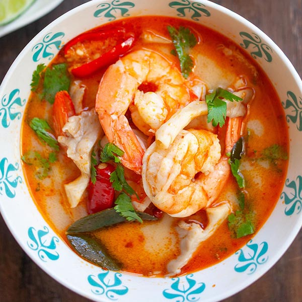

Tom Yum Goong (lemongrass shrimp soup)

Tom Yum Goong soup is one of the most well known dishes in Thai cuisine, and in this recipes
you'll learn to make the authentic
Thai street food style version.
Ingredients
- 4 cups shrimp stock, chicken stock, or water
- 8-12 medium sized shrimp, head and shell on if possible
- 5-6 kaffir lime leaves, roughly torn or cut
- 1 lemongrass stalk, smashed and cut into 1-2 inch pieces
- 7-8 rounds galangal, thinly sliced.
- Thai chilies, to taste, bruised and cut into large pieces
- 3-4 Tbsp Thai chilli paste, optional
- ½ cup lime juice
- 3 Tbsp fish sauce
- 1-2 tsp sugar
- 3 cups oyster mushroom,
cut or tear large ones into bite-sized pieces
- Cilantro for garnish
Steps
- Add the shrimp stock,
lemongrass, kaffir lime leaves, galangal and
chilies to the pot.ring to a boil and let it boil for 3-4 minutes
until you can smell the fragrance of the herbs from the pot.
- When the soup is done simmering,
add the oyster mushrooms, and bring the soup back to a boil.
- Once the soup comes back to a boil, add the shrimp and when the soup just starts to bubble again, turn off the heat.
Let the residual heat of the soup cook the shrimp completely,
another minute or so.
- Add the lime juice, fish sauce, chili paste (if using)
and sugar to your soup and stir.
Taste and adjust seasoning to your liking.
If you're not using the chili paste,
you may find you need to add a bit more
fish sauce/sugar. But taste it first!
- Garnish with cilantro leaves and serve with rice or turn it into a “Kuay Tiew Tom Yum”
by pouring the soup over rice noodles for a pho-style meal!